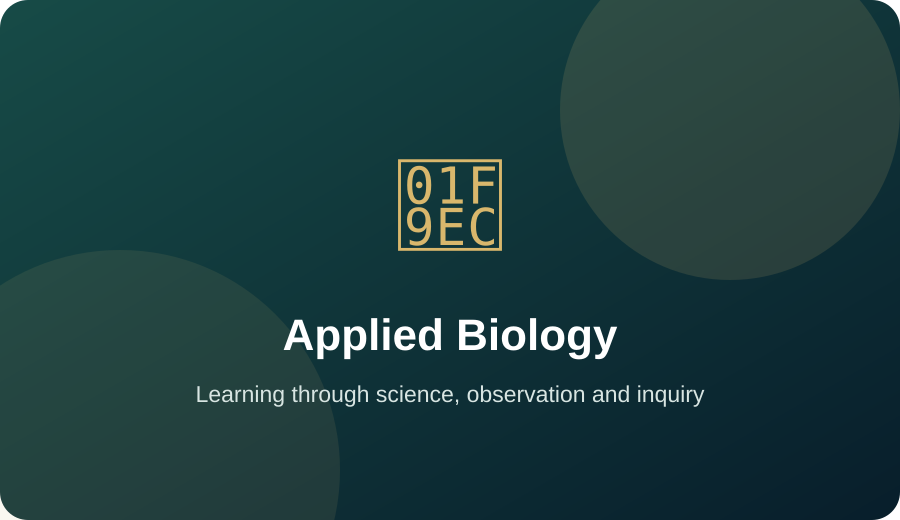

Education · Skills · Inquiry
Academic Journey
My studies in Applied Biology are building the knowledge and practical thinking needed to understand biological systems.

Education
| Programme | Bachelor of Science in Applied Biology |
|---|---|
| Institution | Jomo Kenyatta University of Agriculture and Technology (JKUAT) |
| Registration number | SCB225-0207/2025 |
| Study period | 2025 – present (confirm/update if required) |
Developing skills
The following are relevant areas of learning for an Applied Biology student. Edit the list to reflect skills you have actually practised and your current level.
Scientific foundations
- Cell biology and histology
- Genetics and molecular biology
- Microbiology
Practical and academic skills
- Laboratory safety and procedures
- Scientific observation and recording
- Research, analysis and report writing
Research interests
I am interested in exploring how biological knowledge can be applied to real-world challenges. Areas I would like to learn more about include genetics, microbiology, biotechnology, human and environmental health, and conservation biology.
Projects and certifications
Add only completed projects and certificates. The examples below are placeholders, not claims of completed qualifications.
| Project / certificate | Year | What I learned |
|---|---|---|
| Laboratory practical reports | 2025–2026 | Scientific observation, documentation and safe laboratory practice |
| [Add verified project] | [Year] | [Brief learning outcome] |